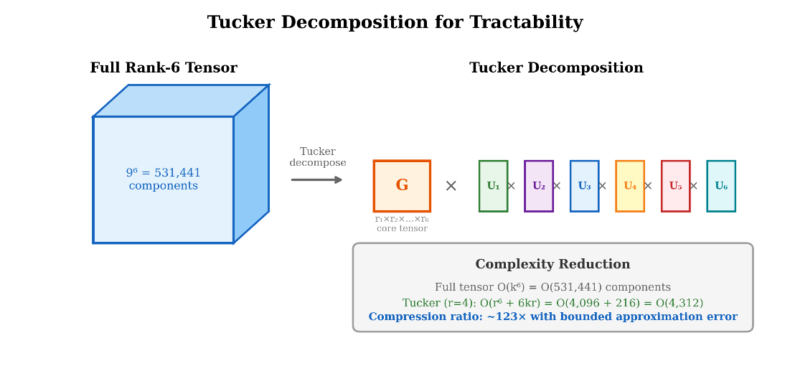
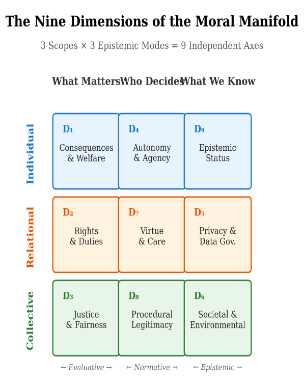

Chapter 6: The Tensor Hierarchy
RUNNING EXAMPLE — Priya’s Model
Priya now thinks in tensors. Her TrialMatch score S is rank-0: a scalar. Patient needs form an obligation vector Oᵋ in nine dimensions. What patients want from the trial—hope, knowledge, dignity, access—forms an interest covector Iₘ. The contraction S = Iₘ Oᵋ would give a meaningful scalar, but only after respecting all nine dimensions. Her model never builds Oᵋ or Iₘ. It goes straight to S using a neural network whose internal representations have no guaranteed correspondence to moral dimensions. She writes in her notebook: ‘My model doesn’t contract a tensor. It guesses the contraction without ever forming the tensor. That’s why it can’t see the structure it’s losing.’
Chapter 5 built the stage — the moral manifold M, a nine-dimensional stratified space of structured moral situations. This chapter populates the stage with actors: the tensors of various ranks that encode moral evaluation. We develop obligations as vectors, interests as covectors, the moral metric as the structure of permissible trade-offs, and the fundamental formula S = I_μ O^μ in which satisfaction is the contraction of interest with obligation.
6.1 From Scalars to Tensors: Why Rank Matters
Recall the argument of Chapter 2: scalar moral evaluation loses information. A single number S ∈ ℝ assigned to a situation p ∈ M tells us how good the situation is, but not along which dimensions it is good, not in which direction improvement lies, and not how robust the assessment is to changes in perspective or weighting.
The remedy is to replace the scalar with objects of successively higher rank, each encoding more of the structure of moral evaluation:
| Rank | Object | What It Captures | What It Loses |
|---|---|---|---|
| (0,0) | Scalar S | Overall moral assessment | Everything else |
| (1,0) | Obligation vector O^μ | Direction and magnitude of duty | How interests weight the dimensions |
| (0,1) | Interest covector I_μ | How much each dimension matters to a stakeholder | What the duties actually are |
| (0,2) | Metric tensor g_μν | The structure of trade-offs between dimensions | Which duties and interests are operative |
| (1,1) | Evaluation tensor E^μ_ν | The full map from interests to obligation-responses | The specific stakeholder and context |
The hierarchy continues beyond rank 2. Chapters 14 and 16 introduce higher-rank tensors for collective agency and uncertainty, and the DEME V3 implementation (Chapter 19) extends the hierarchy to rank 6:
| Rank | Object | What It Adds | Dimensions |
|---|---|---|---|
| 3 | Uncertainty-aware tensor | Per-dimension confidence; covariance structure \Sigma^{\mu\nu} | k×k×k |
| 4 | Temporal tensor | Time evolution with discount \gamma; trajectory analysis | k×k×k×τ |
| 5 | Coalition tensor | Multi-agent coordination; Shapley credit assignment | k×k×k×τ×n |
| 6 | Sample tensor | Monte Carlo distributional risk (CVaR, VaR) | k×k×k×τ×n×s |
where k = 9 is the moral manifold
dimension, \tau is the number of time
steps, n the number of agents or
coalitions, and s the number of Monte
Carlo samples. Tucker decomposition and tensor-train formats maintain
tractability as rank increases (see Chapter 19 for implementation
details).  Figure 1 illustrates the full rank hierarchy
and its contraction structure.
Figure 1 illustrates the full rank hierarchy
and its contraction structure.
| The Tensor Rank Tower
Each step up the hierarchy preserves more information. The crucial insight is that the scalar S is always recoverable from the higher-rank objects by contraction — summation over paired indices — but the higher-rank objects are not recoverable from S. Information flows downward (by contraction), not upward. The tensor hierarchy is a hierarchy of informativeness, with the scalar at the bottom.

Tucker decomposition of the MoralTensor: the full rank-3 tensor T decomposes into a compact core tensor S multiplied by factor matrices along each mode (moral dimensions, agents, time steps), enabling tractable computation while preserving multi-modal structure.
| Tucker Decomposition for Tractability
6.2 Obligations as Vectors
The Directional Character of Duty
An obligation is not merely strong or weak. It points — from the current state of affairs toward a required state. “You ought to return the borrowed book” specifies both an intensity of oughtness and a direction: from the state “book unreturned” toward the state “book returned.” The spatial metaphor is not merely metaphorical. It is the content of a precise mathematical claim: obligations are tangent vectors on the moral manifold.
Definition 6.1 (Obligation Vector). An obligation at a point p ∈ M is a tangent vector O(p) ∈ T_pM. An obligation field is a smooth section O: M → TM of the tangent bundle, assigning an obligation vector to each point of M . Smoothness is defined stratum-wise: within each stratum S_α, the section O|_{S_α} is smooth; across stratum boundaries, O may be discontinuous.
In the nine-dimensional coordinates (x¹, …, x⁹) of Chapter 5, an obligation vector has nine components:
O = O^{\mu}\frac{\partial}{\partial x^{\mu}} = O^{1}\frac{\partial}{\partial x^{1}} + O^{2}\frac{\partial}{\partial x^{2}} + \cdots + O^{9}\frac{\partial}{\partial x^{9}}
Each component O^μ gives the strength of the obligation along dimension μ:

O¹ = obligation to improve consequences/welfareO² = obligation to respect rights and fulfill duties
O³ = obligation to promote justice and fairness
O⁴ = obligation to preserve autonomy
O⁵ = obligation to protect privacy
O⁶ = obligation to consider societal/environmental impact
O⁷ = obligation to exercise virtue and care
O⁸ = obligation to ensure procedural legitimacy
| The Nine Dimensions of the Moral Manifold
Figure 3 provides a visual map of these nine dimensions and shows how higher-rank tensors build upon them.
Rank progression: from rank-1 obligation vectors to rank-6 distributional tensors.
Higher ranks encode richer moral structure at the cost of greater computational complexity.
A situation may generate obligations along multiple dimensions simultaneously. The promise to help Alex move generates O² > 0 (a duty exists) and O⁷ > 0 (the care relationship calls for action), while the components along other dimensions may be zero or negligible. The direction of O in the nine-dimensional tangent space encodes which moral considerations are in play.
| Building Higher-Rank Tensors from the 9 Dimensions
Because O^μ is a vector (a (1,0)-tensor), it transforms under coordinate redescription by the Jacobian:
{\widetilde{O}}^{\mu} = \frac{\partial{\widetilde{x}}^{\mu}}{\partial x^{\nu}}O^{\nu}
This is the mathematical content of the Bond Invariance Principle applied to obligations: the obligation itself is a geometric object, independent of how we describe the situation. Only its components change under redescription. If “withholding treatment” and “allowing natural death” are coordinate redescriptions of the same action, the obligation vectors must be related by the Jacobian of the coordinate change.
The Zero Vector and Its Significance
A point p where O(p) = 0 — the zero vector — is a point of no obligation. The agent at p has no duty to move in any direction. This does not mean the situation is morally neutral; it means no change is required. This occurs when all duties are satisfied, or (more interestingly) when duties in different dimensions cancel: the obligation to act along Dimension 2 is balanced by a counter-obligation along Dimension 4, resulting in a net obligation of zero.
The vanishing of O is coordinate-invariant: if O = 0 in one coordinate system, it is zero in all. This is important because it means that whether an obligation exists is an objective feature of the situation, not an artifact of description.
Multiple Obligation Sources
In general, multiple sources generate obligations simultaneously. A promise creates an obligation along Dimension 2. A relationship creates an obligation along Dimension 7. An emergency creates an obligation along Dimension 1. These combine by vector addition:
O_{\text{total}} = O_{\text{promise}} + O_{\text{care}} + O_{\text{emergency}}
This is the geometric version of Ross’s insight that duties are plural and interact: some are aligned (pointing in similar directions), some are orthogonal (addressing independent concerns), and some are opposed (pointing in opposite directions). The net obligation is their vector sum — a single vector that encodes, in its direction and magnitude, the resultant of all operative moral considerations.
When two obligations are opposed, the resultant may have smaller magnitude than either individually. When they are aligned, the resultant is larger. When they are orthogonal, the resultant points in a direction different from either source — an emergent moral direction that neither obligation alone would generate.
Chapter 11 reinterprets these obligation vectors within the A* search framework: the obligation Oᵐ is the negative gradient of a heuristic function h that estimates the cost remaining to reach moral equilibrium. The directionality of the obligation is the direction of steepest descent of h.
6.3 Interests as Covectors
The Dual Perspective
If obligations are vectors — objects that point — then interests are covectors — objects that weight. An interest does not point in a direction; it assigns a numerical value to each direction, measuring how much that direction matters to the interested party.
Definition 6.2 (Interest Covector). An interest at a point p ∈ M is a covector I(p) ∈ T_p^M — a linear map from tangent vectors to real numbers. An interest field is a smooth section I: M → T^M of the cotangent bundle.
In coordinates, an interest covector has components with lower indices:
I = I_{\mu}\, dx^{\mu} = I_{1}\, dx^{1} + I_{2}\, dx^{2} + \cdots + I_{9}\, dx^{9}
Each component I_μ gives the weight that this interest assigns to dimension μ:
I₁ = how much consequences/welfare matters to this stakeholder
I₂ = how much rights/duties matter
I₃ = how much justice/fairness matters
…and so on.
An interest covector represents a perspective on what matters — a profile of moral priorities. Different stakeholders in the same situation will typically have different interest covectors.
Why Covectors, Not Vectors?
The distinction between vectors and covectors (Chapter 4, Section 4.3) may seem pedantic, but it is morally significant. Vectors and covectors are different mathematical objects with different transformation laws. They are dual to each other — a covector acts on a vector to produce a scalar — and this duality captures the fundamental structure of moral evaluation.
Obligations are what is required. They have a direction — a specific change that duty demands. Interests are what matters. They assign significance to directions — they weight the dimensions of moral evaluation. The satisfaction of an interest by an obligation is the pairing of the two: the covector I applied to the vector O.
This duality is not a convention. It reflects a deep asymmetry in moral reasoning. Obligations and interests are not the same kind of thing, and treating them as such (as scalar frameworks implicitly do, by collapsing both into numbers and adding them) obscures the structure of moral evaluation.
The Gradient as a Natural Covector
The most natural covector at a point is the gradient of a scalar function. If V: M → ℝ is a value function — a scalar measure of how good things are in some respect — then its gradient dV is a covector field:
(dV)_{\mu} = \frac{\partial V}{\partial x^{\mu}}
Applied to a tangent vector v, the gradient gives the rate of change of V in the direction v:
dV(v) = v^{\mu}\frac{\partial V}{\partial x^{\mu}}
This has a clear moral reading: if V measures welfare, then dV is the welfare interest — the covector that, applied to any proposed change (tangent vector), reports how much welfare would change. A stakeholder whose interest is welfare maximization is described by the covector I = dV.
Different value functions yield different interest covectors. A welfarist has I = d(Welfare). An egalitarian has I = d(Equality). A libertarian has I = d(Liberty). The interest covector encodes the theory; the obligation vector encodes the situation; and their pairing produces a verdict.
6.4 The Fundamental Contraction: Satisfaction
The Formula
The central formula of geometric ethics is the contraction of interest with obligation:
S = I_{\mu}O^{\mu} = \sum_{\mu = 1}^{9}I_{\mu}O^{\mu}
Definition 6.3 (Satisfaction). The satisfaction S at a point p ∈ M, given an obligation vector O ∈ T_pM and an interest covector I ∈ T_p^M, is the scalar S = I(O) = I_μ O^μ.*
Remark. The contraction S = I_μ O^μ requires that O and I are defined at the same base point p ∈ M (O ∈ T_pM, I ∈ T_p*M). Comparing satisfaction values at different points p and q requires parallel-transporting one tensor to the other’s base point along a path γ from p to q, introducing a path-dependence that reflects the curvature of the moral manifold (see Chapter 10).
This formula says: to evaluate how well an obligation addresses an interest, apply the interest (as a linear functional) to the obligation. The result is a real number — a scalar — that is invariant under coordinate redescription.
Unpacking the Formula
Expanding in coordinates:
S = I_{1}O^{1} + I_{2}O^{2} + I_{3}O^{3} + \cdots + I_{9}O^{9}
Each term I_μ O^μ represents the contribution of dimension μ to overall satisfaction: the weight that the interest assigns to that dimension, multiplied by the strength of the obligation in that dimension. Satisfaction is large when the obligation points in the directions that the interest weights most heavily. Satisfaction is small (or negative) when the obligation points orthogonally to — or in opposition to — the interest.
The Moral Content of Contraction
Contraction is the mathematical operation that converts multi-dimensional moral structure into a single-dimensional verdict. It is the point at which the tensorial framework makes contact with the scalar requirement of action: eventually, one must decide, and a decision is (in this minimal sense) a scalar — this option rather than that.
But the contraction is explicit. We can see exactly which interests generated the verdict, which dimensions of obligation contributed, and how the result would change if the interest covector were different. This is the fundamental advantage over scalar ethics: the scalar verdict S is not a black box. It is a transparent contraction of identifiable moral components.
Chapter 15 develops the concept of moral residue: the information that contraction discards. When S = I_μ O^μ is the same for two very different obligation-interest configurations, the scalar says “these are equivalent.” But the tensorial structure reveals that they are equivalent only from this particular interest-perspective, and that a different interest covector would distinguish them.
Contraction Is Not Unique
Different interest covectors yield different satisfaction scalars for the same obligation:
S_{\text{welfarist}} = I_{\mu}^{\text{welfare}}O^{\mu} \neq I_{\mu}^{\text{egalitarian}}O^{\mu} = S_{\text{egalitarian}}
The framework does not say which contraction is “correct.” It says: specify your interest covector (your theory of what matters), and the satisfaction follows by mathematics. The choice of I is the moral content; the contraction is the mathematical form.
This means that disagreement between ethical theories can be localized: do the welfarist and the egalitarian disagree about the obligation O (the facts about what is required), or about the interest I (the weights on what matters)? The tensorial framework separates these questions, which scalar frameworks conflate.
6.5 The Moral Metric
Relating Vectors and Covectors
Obligations (vectors) and interests (covectors) live in dual spaces. In general, there is no canonical way to convert one into the other. A vector is a direction; a covector is a weight. They are fundamentally different kinds of object.
But a metric tensor provides a bridge. The metric g_μν is a symmetric (0,2)-tensor that defines an inner product on tangent vectors (Chapter 4, Section 4.5). Given a metric, we can:
Lower an index: Convert a vector O^μ into a covector O_ν = g_μν O^μ. This covector is “the interest that exactly aligns with obligation O.”
Raise an index: Convert a covector I_μ into a vector I^ν = g^{μν} I_μ. This vector is “the obligation that exactly satisfies interest I.”
Measure inner products: The inner product of two obligation vectors is g_μν O^μ P^ν — a scalar measuring the alignment between two duties.
The Metric as Trade-off Structure
What does the moral metric mean? It encodes the structure of permissible trade-offs between moral dimensions.
Diagonal components g_μμ (no sum) give the weight of dimension μ — how much a unit change along dimension μ “costs” in moral terms.
Off-diagonal components g_μν (μ ≠ ν) give the coupling between dimensions — how much change in dimension μ is related to change in dimension ν.
If g_μν > 0: improvements along μ tend to correlate with improvements along ν. The dimensions are aligned.
If g_μν < 0: improving along μ tends to worsen ν. The dimensions are opposed — they compete.
If g_μν = 0: the dimensions are orthogonal — they vary independently, and no trade-off between them exists.
Example. Suppose Dimensions 1 (welfare) and 3 (justice) have g₁₃ < 0 in some region of M. This means that increasing welfare comes at the cost of justice, and vice versa — a structural tension between efficiency and equity. The magnitude g₁₃ measures how severe the trade-off is: a large negative coupling means even small welfare gains require significant justice costs.
If g₁₃ = 0, welfare and justice are independent: one can be improved without affecting the other. If g₁₃ > 0, they are synergistic: improving welfare tends to improve justice as well.
Different Theories as Different Metrics
One of the most powerful features of the geometric framework is that different ethical theories correspond to different metric tensors on the same underlying manifold M.
Utilitarian metric. All dimensions are commensurable. The metric is non-degenerate with specific trade-off ratios:
g_{\mu\nu}^{\text{util}} = w_{\mu}\delta_{\mu\nu}
where w_μ are the utilitarian weights and δ_μν is the Kronecker delta (a diagonal metric). Trade-offs are always available: any loss along one dimension can be compensated by a sufficient gain along another.
Lexicographic metric. Some dimensions have lexicographic priority. Formally, this is the limit of a family of metrics:
g_{\mu\nu}^{\text{lex}}(\epsilon) = \text{diag}(\epsilon^{- 2(9 - \pi(\mu))})
where π is a priority ordering and ε → 0. In the limit, the highest-priority dimension dominates all trade-off calculations. Lower-priority dimensions matter only when the highest-priority dimension is tied.
Degenerate metric. Some dimensions are incommensurable. The metric has zero eigenvalues along certain directions:
g_{\mu\nu}^{\text{deg}}v^{\mu}w^{\nu} = 0\quad\text{for all }w,\text{ if }v\text{ lies in the incommensurable subspace}
This means no inner product can be formed between obligation components in the incommensurable directions. No trade-off is defined. The framework represents this as a structural feature of moral space, not a failure of analysis.
The Metric Is Not Given
The framework does not tell us which metric is correct. The choice of metric is a substantive moral commitment — it is where ethical content enters the formal structure. Chapter 9 develops this point: the metric is neither discovered (contra moral realism taken naively), nor constructed by idealized reason alone (contra constructivism), nor projected by our sensibilities (contra expressivism), but governed — the output of legitimate institutional processes that have authority to determine, for a community, how moral trade-offs are structured.
What the framework provides is precision: once a metric is specified, its consequences follow by mathematics. Two theories that seem to disagree about everything may, in tensorial form, agree on the manifold and the obligation fields but differ only in the metric — a disagreement that can be precisely located and productively debated.
6.6 The Full Moral Tensor
Beyond Vectors and Covectors
The obligation vector O^μ and the interest covector I_μ are rank-1 tensors. The metric g_μν is a rank-2 tensor. But moral evaluation often requires higher-rank structure.
The Evaluation Tensor
Definition 6.4 (Evaluation Tensor). The evaluation tensor at a point p ∈ M is a (1,1)-tensor E^μ_ν that maps interest covectors to obligation-response vectors:
Type clarification. E^μ_ν is a (1,1)-tensor (one contravariant, one covariant index). As a linear map, it acts on covectors and produces vectors: given an interest covector I_ν, the contraction E^μ_ν I_ν = O^μ yields the obligation-response vector. Equivalently, via the metric, E can be viewed as a linear endomorphism of the tangent space T_pM. The satisfaction scalar is then the further contraction S = I_μ O^μ = I_μ E^μ_ν I_ν, a quadratic form in the interest covector.
O_{\text{response}}^{\mu} = E_{\nu}^{\mu}I^{\nu}
The evaluation tensor encodes: given an interest (what matters to a stakeholder), what obligation does the situation generate? It is the moral function of the situation — the map from “what you care about” to “what you ought to do.”
Different situations have different evaluation tensors. A situation involving an explicit promise has a large E²_2 component (an interest in rights generates a strong obligation in the rights dimension). A situation involving a vulnerable person has a large E¹_7 component (a care interest generates a welfare obligation).
The Multi-Agent Evaluation Tensor
When multiple agents are involved, the evaluation tensor acquires an additional agent index:
Notational caution. The agent superscript (a) in E^{μ(a)}_ν is a label index, not a tensor index. It does not transform under coordinate changes on M. The multi-agent evaluation tensor is therefore not a single higher-rank tensor on M, but a family of (1,1)-tensors {E^{(a)}} parametrized by the agent set A. The notation E^{μ(a)}_ν is retained for compactness but should be read as “the μν-component of agent a’s evaluation tensor.”
E_{\nu a}^{\mu}(p)
This (1,2)-tensor assigns, for each agent a and each interest dimension ν, an obligation component O^μ. Different agents in the same situation face different obligations: the physician’s obligations differ from the patient’s family’s.
The correlative structure of Hohfeldian analysis (Chapter 5, Section 5.4) is a constraint on this tensor: if agent a has an obligation component E²_{2,a} > 0 (a duty in the rights dimension), then agent b — the correlative party — must have E²_{2,b} corresponding to a claim. This constraint links the evaluation tensors of different agents at the same point.
The Uncertainty Tensor
Moral evaluation is rarely certain. The uncertainty tensor (or moral covariance tensor) is a symmetric (2,0)-tensor:
\Sigma^{\mu\nu}(p\mathbb{) = E\lbrack(}\delta O^{\mu})(\delta O^{\nu})\rbrack
where δO^μ is the deviation of the obligation component from its expected value. This tensor encodes:
Variance along each dimension: Σ^{μμ} measures how uncertain we are about the obligation in dimension μ.
Covariance between dimensions: Σ^{μν} (μ ≠ ν) measures whether uncertainty in dimension μ correlates with uncertainty in dimension ν.
Principal directions of uncertainty: The eigenvectors of Σ give the directions of maximum and minimum moral uncertainty.
The moral risk of a decision depends on the alignment between the uncertainty tensor and the interest covector:
\sigma_{S}^{2} = \Sigma^{\mu\nu}I_{\mu}I_{\nu}
This scalar — the variance of satisfaction given structured uncertainty — is large when uncertainty concentrates along the dimensions the stakeholder cares most about, and small when uncertainty lies along morally irrelevant directions.
This is the geometric content of the old man’s “maybe” from Chapter 2: his uncertainty had shape, concentrated along the axes that would turn out to be decisive. The uncertainty tensor captures this shape, and the contraction with the interest covector determines how much the uncertainty matters.
Higher-rank extensions. The uncertainty tensor \Sigma^{\mu\nu} is a rank-2 object attached
to the rank-1 obligation vector. In the DEME V3 implementation (Chapter
19), these combine into a single rank-3 MoralTensor that
jointly represents the obligation and its per-dimension uncertainty.
Further extensions add temporal indices (rank 4) for tracking how
uncertainty evolves through time, coalition indices (rank 5) for
multi-agent scenarios where different coalitions face different
uncertainty structures, and sample indices (rank 6) for distributional
risk measures such as CVaR that require Monte Carlo estimation of tail
risk. These higher-rank tensors are developed theoretically in Chapters
10 (temporal), 14 (collective), and 16 (uncertainty), and implemented
computationally in Chapter 19.
6.7 Scalar Ethics as a Special Case
Recovery by Contraction
Every major ethical theory can be represented as a specific pattern of tensorial structure and a specific contraction that yields a scalar verdict.
Classical utilitarianism. The interest covector is I_μ = (1, 0, 0, 0, 0, 0, 0, 0, 0) — only welfare matters. The satisfaction is:
S_{\text{util}} = I_{\mu}O^{\mu} = O^{1}
The utilitarian verdict depends only on the welfare component of the obligation. All other dimensions are discarded. This is a choice — a specific contraction — not a mathematical necessity. The tensorial framework makes the choice visible.
Prioritarianism. The interest covector gives extra weight to the welfare of the worst-off. If the worst-off is the focal agent, the interest covector has elevated I₁ and I₃ (welfare and justice), with the weight depending on the agent’s position:
I_{\mu}^{\text{prior}} = (w(r),0,w'(r),0,\ldots)
where r is the agent’s ranking and w(r) is a decreasing function giving more weight to lower-ranked individuals.
Kantian deontology. The obligation field is determined by the categorical imperative: O^μ(p) is the obligation at p that would be universalizable. The interest covector foregrounds rights: I₂ is dominant. The satisfaction is:
S_{\text{Kant}} \approx I_{2}O^{2} + I_{4}O^{4}
primarily a function of duty-fulfillment and autonomy-preservation.
Care ethics. The interest covector foregrounds relational dimensions:
S_{\text{care}} \approx I_{7}O^{7} + I_{1}O^{1}
The satisfaction depends primarily on the quality of the care relationship and the welfare impact, with procedural and justice dimensions receiving lower weight.
Virtue ethics. Here the relevant tensor is not the obligation field but a section of the character bundle (Chapter 5, Definition 5.3). The “virtuous action” is the one that a person of excellent character would choose — a section σ of the character fiber bundle that satisfies certain smoothness and consistency conditions. The evaluation is:
S_{\text{virtue}} = g_{\mu\nu}\sigma^{\mu}O^{\nu}
where σ^μ is the character profile and O^ν is the obligation field. Satisfaction is the inner product (measured by the metric) between character and duty.
What This Reveals
The tensorial framework does not adjudicate between these theories. It does something arguably more valuable: it makes their structural commitments visible. Each theory is a choice of:
Which components of O to attend to (which dimensions generate obligations)
Which interest covector to use (what weights the dimensions of evaluation)
Which metric to assume (what trade-offs are permissible)
How to contract (how the multi-dimensional structure reduces to a verdict)
Two theories that seem to disagree about everything may, in tensorial form, agree on the manifold and the obligation fields but differ only in the interest covector — a disagreement that can be precisely located and productively debated. A seemingly deep philosophical dispute may turn out to be a dispute about metric components, resolvable by clarifying the trade-off structure.
Conversely, two theories that seem similar may turn out to differ in the metric rather than the interest — a deeper disagreement, since the metric determines what comparisons are even possible. The framework makes the depth of disagreement visible, not just its existence.
6.8 The Hierarchy in Action
To consolidate the formal development, let us trace a single moral situation through all levels of the tensor hierarchy.
Situation. A physician has a single dose of a scarce medication. Two patients need it: Patient A (younger, less urgent) and Patient B (older, more urgent).
Level 0: Scalar
A single score: “Give to B.” Score = 0.73.
We know the verdict but not the reasons. We cannot explain the decision, audit it, or assess its robustness.
Level 1: Obligation Vector
O = (0.6,0.8,0.7,0.5,0.1,0.3,0.4,0.6,0.3)
Now we can see: the obligation is strongest in Dimension 2 (rights — both patients have claims), Dimension 3 (justice — fair allocation matters), and Dimension 8 (procedural legitimacy — the process should be defensible). The obligation is weakest in Dimension 5 (privacy is not the primary concern).
Level 2: Interest Covector (Physician’s Perspective)
I^{\text{physician}} = (0.20,0.15,0.15,0.10,0.05,0.10,0.10,0.10,0.05)
The physician weights welfare (0.20) most heavily, then rights and justice equally (0.15 each).
S_{\text{physician}} = I_{\mu}O^{\mu} = 0.12 + 0.12 + 0.105 + 0.05 + 0.005 + 0.03 + 0.04 + 0.06 + 0.015 = 0.545
Level 2’: Interest Covector (Patient A’s Family)
I^{\text{family}} = (0.30,0.25,0.05,0.15,0.05,0.02,0.13,0.03,0.02)
The family weights welfare (0.30) and rights (0.25) very heavily — “our loved one deserves this treatment.”
S_{\text{family}} = 0.18 + 0.20 + 0.035 + 0.075 + 0.005 + 0.006 + 0.052 + 0.018 + 0.006 = 0.577
The family’s satisfaction is higher than the physician’s — not because the obligation is different, but because the family’s interests are more strongly aligned with the obligation’s direction.
Level 3: Metric
With a utilitarian metric (diagonal, equal weights), the inner product of the two patients’ claims is:
\langle O_{A},O_{B}\rangle = g_{\mu\nu}O_{A}^{\mu}O_{B}^{\nu}
If this is small, the patients’ claims are nearly orthogonal — they invoke different moral dimensions. If this is large, they invoke similar dimensions and compete head-to-head. The metric determines whether the situation is a genuine dilemma (orthogonal claims, degenerate metric between them) or a tractable trade-off (aligned claims, non-degenerate metric).
What Each Level Adds
| Level | Object | New Information |
|---|---|---|
| 0 | Scalar S | The verdict: which option is preferred |
| 1 | Vector O^μ | The reasons: which dimensions generate obligations |
| 2 | Covector I_μ | The perspective: which dimensions matter to this stakeholder |
| ’ | Multiple I_μ | The landscape of disagreement: how perspectives differ |
| 3 | Metric g_μν | The trade-off structure: how dimensions relate to each other |
Each level makes the previous level’s assumptions explicit and debatable. The scalar hides everything; the full tensor hierarchy hides nothing.
6.9 The Algebra of Moral Tensors
Tensor Product
The tensor product combines two tensors into a higher-rank tensor. If O^μ is an obligation vector and I_ν is an interest covector, their tensor product is:
T_{\nu}^{\mu} = O^{\mu}I_{\nu}
This (1,1)-tensor — a 9×9 matrix in coordinates — encodes the full structure of the obligation-interest pair before contraction. Contraction (tracing over the paired indices) recovers the scalar:
S = T_{\mu}^{\mu} = O^{\mu}I_{\mu}
But the full tensor T^μ_ν carries more information: its eigenvalues give the principal modes of satisfaction, and its eigenvectors give the directions in moral space along which obligation and interest are most (or least) aligned.
Symmetrization and Antisymmetrization
Given a (0,2)-tensor T_μν, its symmetric part is:
T_{(\mu\nu)} = \frac{1}{2}(T_{\mu\nu} + T_{\nu\mu})
and its antisymmetric part is:
T_{\lbrack\mu\nu\rbrack} = \frac{1}{2}(T_{\mu\nu} - T_{\nu\mu})
The metric tensor is symmetric: g_μν = g_νμ. This reflects the fact that the trade-off between Dimension μ and Dimension ν is the same in both directions — the cost of exchanging welfare for justice equals the cost of exchanging justice for welfare.
But not all morally relevant (0,2)-tensors are symmetric. The power tensor P_μν — encoding asymmetric relationships between agents, where agent a’s influence on dimension μ of agent b’s situation differs from the reverse — is generically asymmetric. Its antisymmetric part P_{[μν]} encodes the structural inequity in the relationship: the extent to which the power dynamic favors one dimension over another in a directional way. Chapter 14 develops this in the context of collective agency.
Contraction as Moral Decision
We have emphasized that contraction — summing over a paired index — is the operation that reduces rank and produces scalars. The full chain of contractions from high-rank moral tensors to a scalar action-decision can be written:
S = g^{\mu\alpha}E_{\alpha}^{\beta}I_{\beta} \cdot O^{\mu}
or in various other arrangements depending on which tensors are contracted first. The order of contraction may matter when the tensors are not simply related — different contraction orders correspond to different decision procedures, and these may yield different results on the same inputs.
Chapter 15 develops this observation into the theory of moral contraction: the mathematically necessary, informationally lossy, and (sometimes) order-dependent process by which tensorial moral reality yields scalar action-guidance.
6.10 Summary
The tensor hierarchy on the moral manifold M consists of:
| Object | Type | Role | Mathematical Definition |
|---|---|---|---|
| Satisfaction S | (0,0)-tensor (scalar) | The action-guiding verdict | S = I_μ O^μ |
| Obligation O | (1,0)-tensor (vector field) | Direction and magnitude of duty | O: M → TM |
| Interest I | (0,1)-tensor (covector field) | Stakeholder’s moral priorities | I: M → T*M |
| Metric g | (0,2)-tensor (symmetric) | Trade-off structure between values | g: TM × TM → ℝ |
| Evaluation E | (1,1)-tensor | Map from interests to obligations | O^μ = E^μ_ν I^ν |
| Uncertainty Σ | (2,0)-tensor (symmetric) | Shape of moral uncertainty | Σ^μν = 𝔼[δO^μ δO^ν] |
| Temporal \mathcal{T} | rank-4 tensor | Obligation evolution over time | T^μ_{ν,τ} = γ^τ O^μ_ν(t_τ) |
| Coalition \mathcal{C} | (1,n)-tensor | Collective obligations from n agents | O^μ_coll = C^μ_{ν₁…νₙ} I^(1)_{ν₁}…I^(n)_{νₙ} |
The fundamental formula S = I_μ O^μ is the contraction that ties the hierarchy together: satisfaction is the pairing of interest with obligation, a coordinate-invariant scalar arising from the interaction of two rank-1 tensors.
Different ethical theories are different choices of I (what matters), g (what trade-offs are permissible), and contraction procedure (how to decide). The moral manifold M and the obligation field O — the facts about what duties arise — are common ground. Disagreement is localizable: in the interest, in the metric, or in the contraction. This localizability is the framework’s principal contribution to the analysis of moral disagreement.
Technical Appendix
Proposition 6.1 (Invariance of Satisfaction). The satisfaction scalar S = I_μ O^μ is invariant under admissible coordinate transformations (Type 1 transformations).
Proof. Under a coordinate change x → x̃:
Remark. Proposition 6.1 is definitionally true: the satisfaction scalar S = I_μ O^μ is a contraction of a covector with a vector, which is by definition coordinate-independent. The proposition is included for completeness and to make explicit that no additional structure (metric, connection, or volume form) is required for S to be well-defined — only the natural pairing between T_pM and T_p*M.
{\widetilde{I}}_{\mu}{\widetilde{O}}^{\mu} = \left( \frac{\partial x^{\nu}}{\partial{\widetilde{x}}^{\mu}}I_{\nu} \right)\left( \frac{\partial{\widetilde{x}}^{\mu}}{\partial x^{\rho}}O^{\rho} \right) = \frac{\partial x^{\nu}}{\partial{\widetilde{x}}^{\mu}}\frac{\partial{\widetilde{x}}^{\mu}}{\partial x^{\rho}}I_{\nu}O^{\rho} = \delta_{\rho}^{\nu}\, I_{\nu}O^{\rho} = I_{\rho}O^{\rho} = S
The Jacobian and inverse Jacobian cancel, leaving the scalar unchanged. □
Proposition 6.2 (Decomposition of Disagreement). *Two evaluators with interest covectors I and I’ yield different satisfactions S = I_μ O^μ and S’ = I’_μ O^μ for the same obligation O if and only if ΔI_μ O^μ ≠ 0, where ΔI = I’ − I. In particular, S = S’ for all O if and only if I = I’. The disagreement decomposes as:*
S' - S = (I_{\mu}' - I_{\mu})O^{\mu} = \Delta I_{\mu}\, O^{\mu}
where ΔI = I’ - I is the “interest difference covector.” The disagreement vanishes along dimensions where ΔI_μ = 0 and is proportional to O^μ along dimensions where both the interest difference and the obligation are nonzero.
Proof. By linearity of the contraction: S' − S = I'μ Oᵘ − Iμ Oᵘ = (I'μ − Iμ)Oᵘ = ΔIμ Oᵘ. For the biconditional: S' ≠ S iff ΔIμ Oᵘ ≠ 0, which requires ΔIμ ≠ 0 for at least one μ with Oᵘ ≠ 0. Conversely, ΔIμ = 0 for all μ implies S' = S, and S' = S for all O implies ΔIμ = 0 for all μ (choose O = e_μ for each dimension). The component-wise structure follows: the contribution from dimension μ is ΔIμ Oᵘ, which vanishes iff ΔIμ = 0 or Oᵘ = 0. □
Proposition 6.3 (Metric Dependence of the Gradient Direction). The gradient vector of a scalar function f on M depends on the metric:
(\text{grad }f)^{\mu} = g^{\mu\nu}\frac{\partial f}{\partial x^{\nu}}
Different metrics yield different gradient directions for the same function. In particular, the “direction of moral improvement” — the gradient of the satisfaction function — depends on the metric, which is to say: on the ethical theory.
Proof. The gradient of f is the unique vector field satisfying g(grad f, V) = df(V) for all vector fields V. In coordinates: g_{μα}(grad f)ᵅ = ∂f/∂xᵘ. Multiplying both sides by g^{μν}: (grad f)ᵛ = g^{μν} ∂f/∂xᵘ. Since g^{μν} appears explicitly, the gradient depends on the metric. For two admissible metrics g and ĝ with g^{μν} ≠ ĝ^{μν}, we have (grad_g f)ᵛ ≠ (grad_{ĝ} f)ᵛ whenever ∂f/∂xᵘ ≠ 0 along a dimension where the inverse metrics differ. □
This result is central to the framework. The facts of the situation (the obligation field O) may be common ground, but the direction of improvement (the gradient of S) depends on the metric — the theory of trade-offs. Two theories agreeing on the facts can disagree about what to do, because they disagree about the metric.
❖
The scalar is where ethics ends: in a decision.
The tensor is where ethics lives: in the structure that generates, constrains, and illuminates the decision.